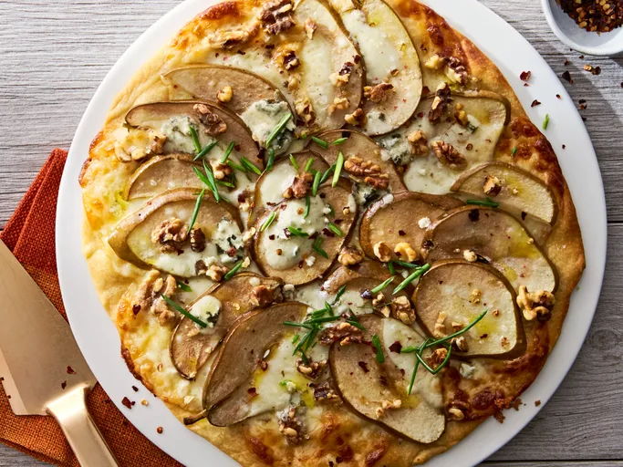

Pizza Recipe

This Gorgonzola pizza makes a great appetizer. Everyone will love the unique combination of sweet pear with the distinctive nutty flavor of Gorgonzola cheese.
Ingredients
- 1 (16 ounce) package refrigerated pizza crust dough
- 1 Bosc pear, thinly sliced
- 1 Bosc pear, thinly sliced
- 2 ounces chopped walnuts
- 2 ½ ounces Gorgonzola cheese, crumbled
- 2 tablespoons chopped fresh chives
Steps
- Preheat the oven to 450 degrees F (230 degrees C).
- Place pizza crust dough on a medium baking sheet. Layer with Provolone cheese. Top cheese with Bosc pear slices. Sprinkle with walnuts and Gorgonzola cheese.
- Bake in the preheated oven 8 to 10 minutes, or until cheese is melted and crust is lightly browned. Remove from heat. Top with chives and slice to serve.
Home Page